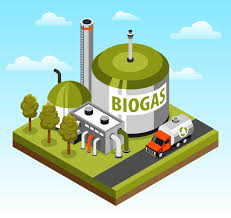

Biomasse

Source : La biomasse provient de matières organiques telles que le bois, les déchets agricoles,
les résidus alimentaires et les déchets industriels organiques
Utilisation : Elle est utilisée de différentes manières :
la combustion directe pour produire de la chaleur, la transformation en biogaz ou en biocarburants pour produire de l'électricité ou alimenter les transports,
et la valorisation des déchets pour réduire l'impact environnemental.
La biomasse permet également de recycler les déchets tout en produisant de l'énergie